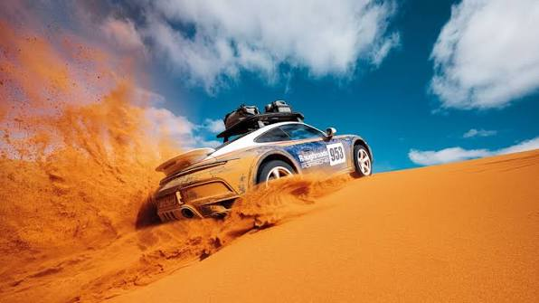
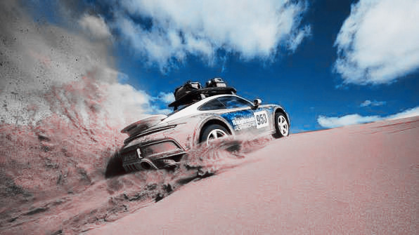
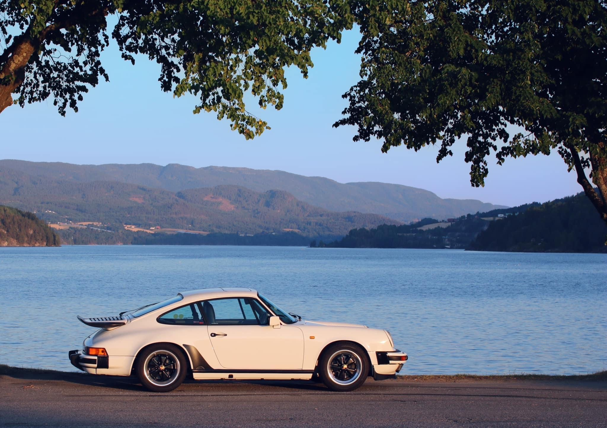
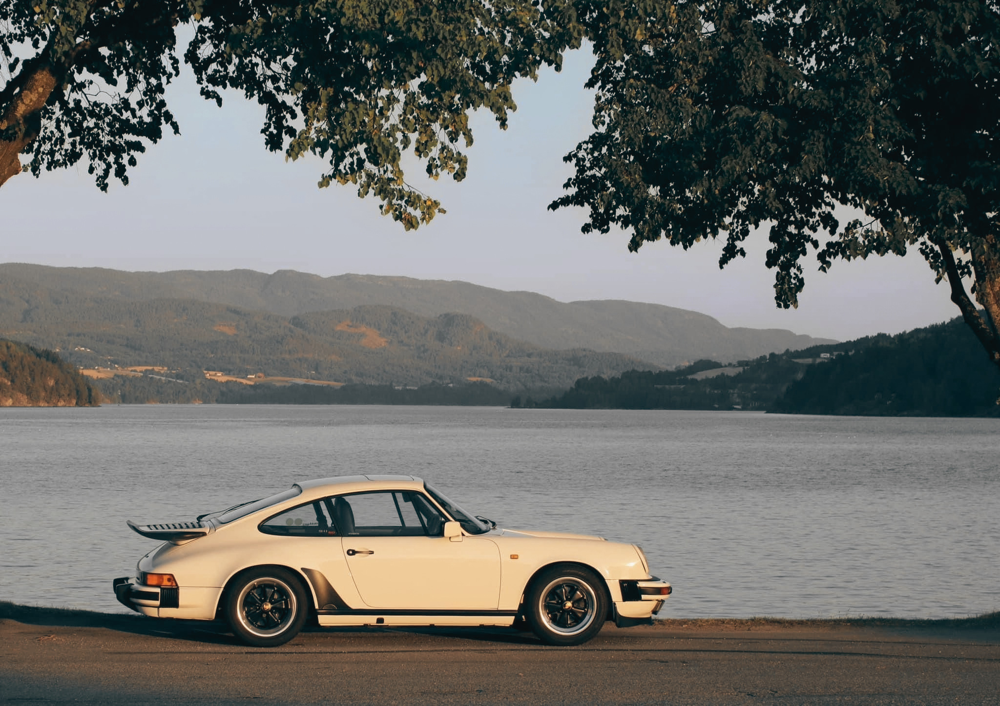
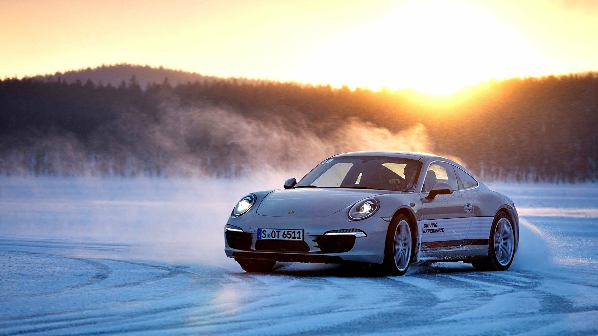
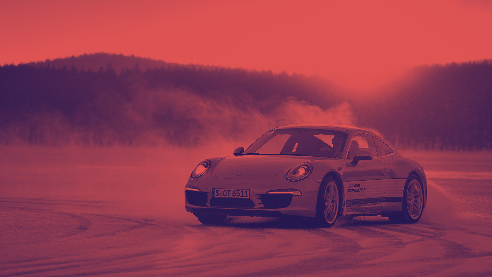
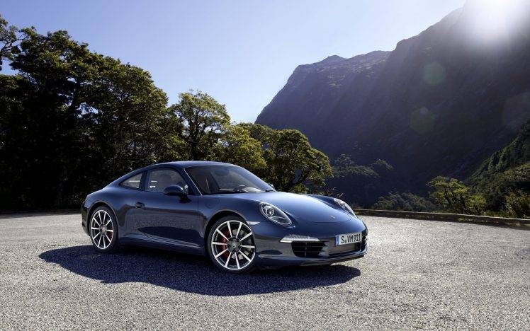
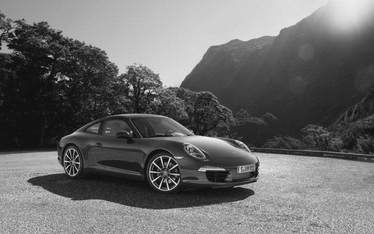

01. The Classic — Black & White
This Porsche image demonstrates a black-and-white editing technique.
Original Image

Edited Image

WEB140 • Cars & Design
Welcome to my Porsche-themed Image Remix & Icon Challenge. Explore how different image editing techniques can change the appearance and mood of Porsche photography.
View Porsche GalleryImage Editing
Each Porsche image below demonstrates a different image-editing technique completed in Canva.
This Porsche image demonstrates a black-and-white editing technique.


This Porsche image demonstrates an adjustment to color saturation.


This Porsche image demonstrates an adjustment to contrast between light and dark areas.


This Porsche image demonstrates a monochromatic treatment using shades of one dominant color.


Font Awesome
These icons were selected from Font Awesome because they relate to cars, driving, performance, and maintenance.
Porsche is known for its distinctive design, performance, and long automotive history.
The road is where Porsche design and performance come together.
Proper maintenance helps keep a Porsche reliable and ready for the road.
WEB140 Project
This WEB140 project demonstrates image editing in Canva and the use of Font Awesome icons in a Porsche-themed webpage.